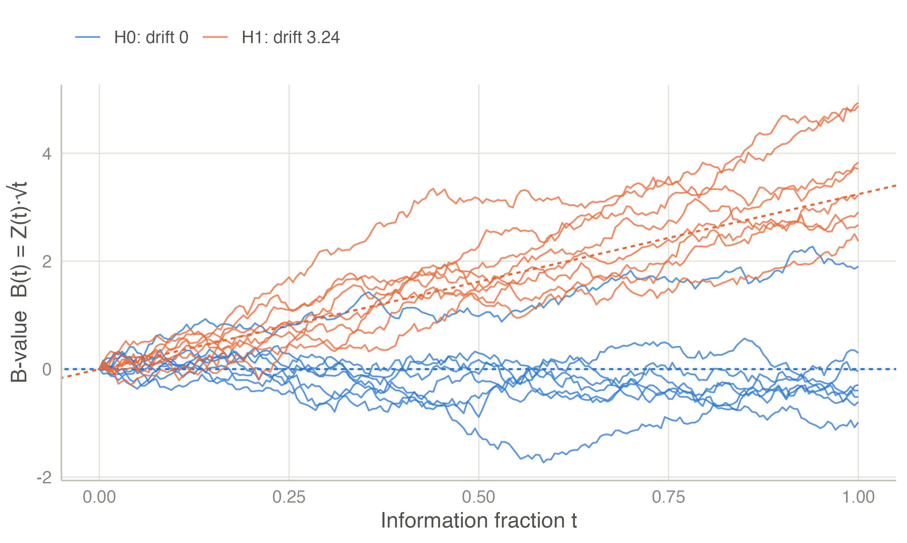
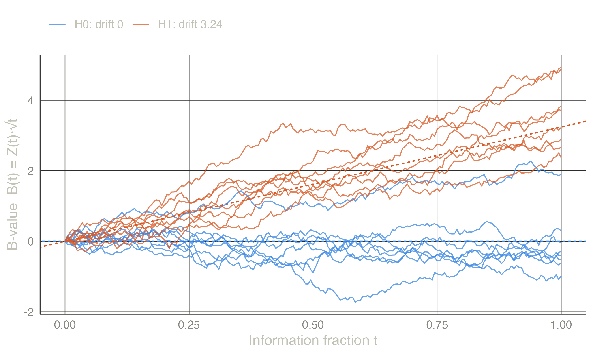

The information about the treatment effect \(\theta\) at a look is the inverse of the variance of its estimate, \(I = 1/\operatorname{Var}(\hat\theta)\). It grows as data accumulate, and it — rather than calendar time or the number of patients — measures how far a study has progressed.
| Endpoint | Effect \(\theta\) | Information |
|---|---|---|
| Continuous, two groups (\(n_1\), \(n_2\) patients, SD \(\sigma\)) | difference in means | \(\dfrac{1}{\sigma^2 (1/n_1 + 1/n_2)}\) |
| Binary, two groups | risk difference | \(\dfrac{1}{p_1(1-p_1)/n_1 + p_2(1-p_2)/n_2}\) |
| Binary, two groups | log odds ratio | \(\left(\sum 1/\text{cell counts}\right)^{-1}\) approximately |
| Time to event, allocation \(r:1\) | log hazard ratio | \(\approx d\, r/(1+r)^2\) with \(d\) events (\(d/4\) for 1:1) |
| Any | estimate with standard error \(SE\) | \(1/SE^2\) |
The information fraction at look \(k\) is \(t_k = I_k / I_{\max}\). For a continuous endpoint it is simply the fraction of patients analysed; for a survival endpoint it is the fraction of the planned events.
Let \(\hat\theta_k\) be the estimate at look \(k\) and \(Z_k = \hat\theta_k \sqrt{I_k}\) the standardised statistic. For a very wide class of models,
\[ Z_k \sim N\!\left(\theta\sqrt{I_k},\, 1\right), \qquad \operatorname{Cov}(Z_j, Z_k) = \sqrt{I_j / I_k} \quad (j \le k). \]
Equivalently, the score statistics \(S_k = Z_k\sqrt{I_k}\) have independent increments: \(S_k - S_{k-1} \sim N\!\left(\theta (I_k - I_{k-1}),\; I_k - I_{k-1}\right)\). This holds exactly for normal data with known variance, and asymptotically for maximum-likelihood estimates in regular parametric models, generalised linear models, the log-rank test and Cox regression (Tsiatis 1982; Jennison and Turnbull 1997; Scharfstein et al. 1997).
The consequence is powerful: boundaries, power and expected sample size depend only on the information fractions, not on the endpoint. A design is solved once on the \(Z\) scale, and the endpoint enters only when information is converted into patients or events (Sample size).
Lan and Wittes (1988) rescaled the statistic as the B-value \(B(t) = Z(t)\sqrt{t}\). Under the canonical distribution, \(B(t)\) is a Brownian motion with drift \(\eta = \theta\sqrt{I_{\max}}\):
\[ B(t) \sim N(\eta\, t,\; t), \qquad \text{independent increments}. \]
Under \(H_0\) the drift is zero; under the design alternative it is \(\eta_1 = \theta_1\sqrt{I_{\max}}\). This picture makes several later results almost immediate, such as conditional power (Monitoring).


A fixed-sample, one-look study with one-sided level \(\alpha\) and power \(1-\beta\) at \(\theta_1\) needs
\[ I_{\text{fix}} = \left(\frac{z_{1-\alpha} + z_{1-\beta}}{\theta_1}\right)^2 , \]
that is, a drift \(\eta_{\text{fix}} = z_{1-\alpha} + z_{1-\beta}\) (use \(\alpha/2\) for a two-sided test). A sequential design with stricter boundaries needs a larger drift \(\eta\) for the same power, so its maximum information is \(I_{\max} = R \cdot I_{\text{fix}}\), where \(R = (\eta/\eta_{\text{fix}})^2\) is the inflation factor.
| Design | Inflation factor | Maximum n per arm |
|---|---|---|
| Fixed | 1.000 | 85 |
| O’Brien-Fleming | 1.026 | 87 |
| Pocock | 1.207 | 102 |
With 1:1 allocation and \(\sigma = 1\), \(I = n/2\) for \(n\) patients per arm, so \(n = 2I\) per arm. The fixed design needs 85 patients per arm. The O’Brien-Fleming design needs only 2 more as a maximum, and most trials will stop earlier.
Probabilities of crossing the boundaries are obtained by recursive numerical integration of the density of \(Z_k\) over the region where the study continues (Armitage et al. 1969; Jennison and Turnbull 2000, ch. 19). The density at look \(k\) is evaluated on a grid of points; Simpson’s rule integrates it forward to look \(k+1\). This needs only the normal density and distribution functions, is exact to about \(10^{-8}\), and takes about a millisecond per design. It is the same algorithm used by gsDesign and rpact, and jmsequential’s implementation agrees with both to within \(10^{-5}\).